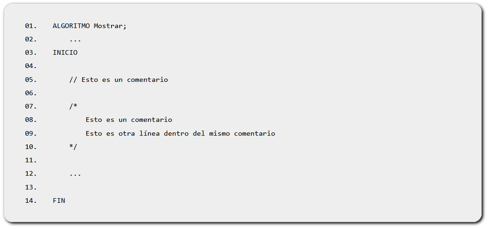

El pseudocódigo es una mezcla entre lenguaje natural y lenguaje de programación.
La estructura básica de un algoritmo en pseudocódigo es:

En 'ALGORITMO' indicamos el nombre del programa, y justo después debemos declarar las variables que serán usadas en él. Entre INICIO y FIN escribiremos las diferentes acciones que irá realizando el programa.
Para escribir un comentario en una línea usaremos la doble barra '//', y para poner un comentario en varias líneas los escribiremos entre /* y */. Esto es así también en muchos lenguajes de programación (como Java).